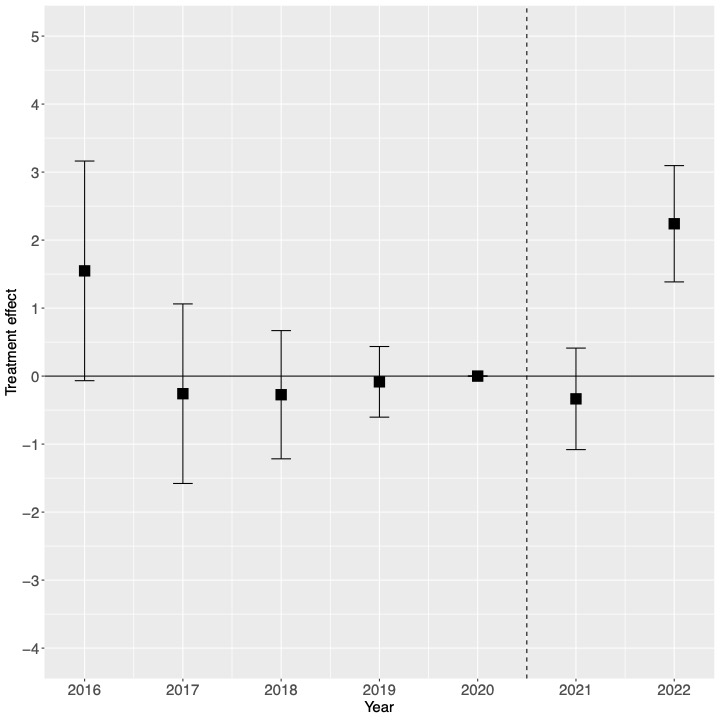

Do Abortion Bans Affect Reproductive and Infant Health? Evidence from Texas’s 2021 Ban and its Impact on Health Disparities
![]()
Abstract
The overturning of Roe v. Wade led to a wave of abortion bans in state legislatures across the United States. This emergence of a restrictive reproductive health policy environment has the potential to affect a wide range of reproductive health outcomes. This paper uses Texas’s 2021 6-week ban on abortion as a case study to examine the causal effect of an abortion ban on reproductive health outcomes, specifically abortion rates, fertility rates, and infant health outcomes. It examines how these effects may be heterogeneous by group, especially focusing on how the effects of abortion bans on reproductive health may be concentrated in those who are already facing disparities in reproductive health outcomes such as Black women. Using a difference-in-differences strategy, the analysis finds that the ban decreased abortion rates by over 40 percent, and increased fertility rates by about 4 percent, with the largest increases for Black non-Hispanic women and for counties far from a state with less restrictive abortion laws. This paper then constructs a measure of unmet reproductive health needs after an abortion ban, and finds that the unmet needs after the Texas 6-week ban are largest in counties with higher proportions of Black non-Hispanic residents, as well as counties which are furthest away from states which did not ban abortion after the Dobbs decision. The analysis then examines the effect of the ban on infant health outcomes, specifically focusing on heterogeneity in the effect of the ban on birth weight and infant mortality. This paper finds that the ban led to increases in the probability of an infant being born with very low birth weight of about 7 percent, with Black non-Hispanic infants experiencing the largest increases in the likelihood of very low birth weight. Additionally, the analysis finds significant increases in the infant mortality rate of about 6 percent after the abortion ban, again with Black non-Hispanic infants experiencing the largest increases in mortality. Further, the ban increased infant mortality rates more in counties which are further away from states which did not ban abortion after the Dobbs decision. The results suggest that the effects of abortion bans tend to be especially concentrated in marginalized populations, as well as those who are least able to shift their fertility options away from in-state abortions after a ban. The analysis shows that the trend towards an increasing number abortion bans will further exacerbate disparities in reproductive health outcomes.
Versions
Key Figures


Citation
@article{caraher2024,
author = {Caraher, Raymond},
title = {Do {Abortion} {Bans} {Affect} {Reproductive} and {Infant}
{Health?} {Evidence} from {Texas’s} 2021 {Ban} and Its {Impact} on
{Health} {Disparities}},
journal = {Political Economy Research Institute (PERI) Working Paper},
number = {606},
date = {2024-07-28},
url = {https://ssrn.com/abstract=4911886},
langid = {en}
}